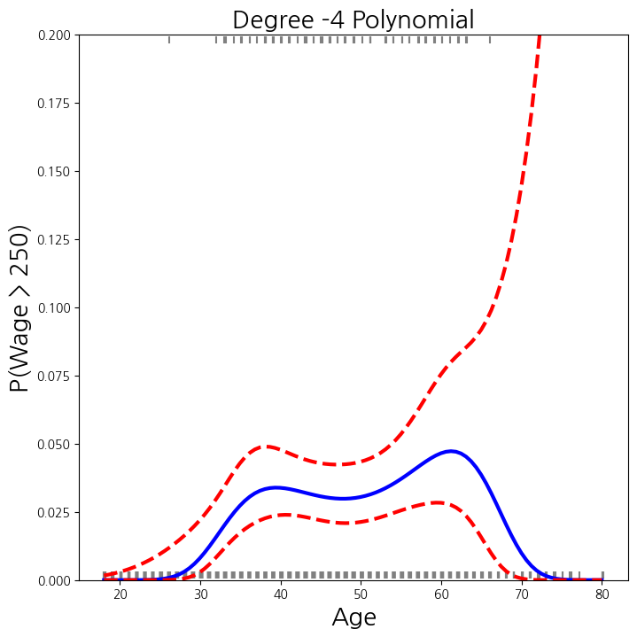
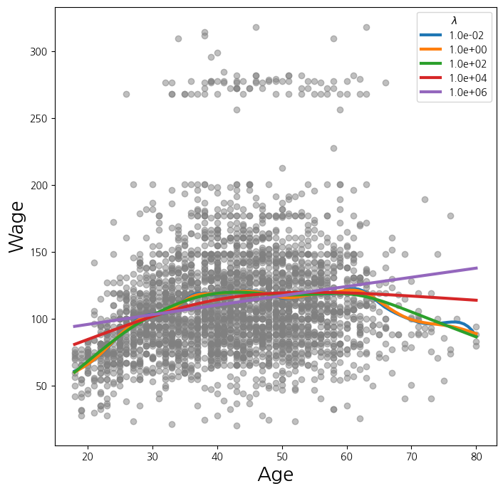

import numpy as np, pandas as pd
from matplotlib.pyplot import subplots
import statsmodels.api as sm
from ISLP import load_data
from ISLP.models import (summarize, poly, ModelSpec as MS)
from statsmodels.stats.anova import anova_lm1. imports
from pygam import (s as s_gam, l as l_gam, f as f_gam, LinearGAM, LogisticGAM)
from ISLP.transforms import (BSpline, NaturalSpline)
from ISLP.models import bs, ns
from ISLP.pygam import (approx_lam, degrees_of_freedom, plot as plot_gam, anova as anova_gam)2. Wage 데이터 분석
Wage = load_data('Wage')
y = Wage['wage']
age = Wage['age']- 4차 다항식(\(x,x^2,x^3,x^4\))으로 분석
# 4차 다항식의 변수확장을 위한 전 처리
# ------------------------------------
poly_age = MS([poly('age', degree=4)]).fit(Wage)
M = sm.OLS(y, poly_age.transform(Wage)).fit()
summarize(M)
age_grid = np.linspace(age.min(), age.max(),100)
age_df = pd.DataFrame({'age': age_grid})# 4차 다항식의 적합 결과를 그리기 위한 함수를 만들고 적합해서 결과를 확인함
# -------------------------------------------------------------------------
def plot_wage_fit(age_df, basis, title):
X = basis.transform(Wage)
Xnew = basis.transform(age_df)
M = sm.OLS(y, X).fit()
preds = M.get_prediction(Xnew)
bands = preds.conf_int(alpha=0.05)
fig , ax = subplots(figsize=(8,8))
ax.scatter(age, y, facecolor='gray', alpha=0.5)
for val, ls in zip([preds.predicted_mean, bands[:,0], bands[:,1]],['b','r--','r--']):
ax.plot(age_df.values , val , ls, linewidth=3)
ax.set_title(title , fontsize =20)
ax.set_xlabel('Age', fontsize=20)
ax.set_ylabel('Wage', fontsize=20);
return ax# 가운데 선은 평균, 위 아래 선들은 95% 수준의 (평균에 대한) 신뢰구간들임
# ---------------------------------------------------------------------
plot_wage_fit(age_df, poly_age, 'Degree -4 Polynomial');- 다항식의 차수를 1차에서 5차까지 조정해보며 확인
summarize(M) #위 결과는 위에 있는 것임
models = [MS([poly('age', degree=d)]) for d in range(1, 6)]
Xs = [model.fit_transform(Wage) for model in models]
anova_lm(*[sm.OLS(y, X_).fit() for X_ in Xs])| df_resid | ssr | df_diff | ss_diff | F | Pr(>F) | |
|---|---|---|---|---|---|---|
| 0 | 2998.0 | 5.022216e+06 | 0.0 | NaN | NaN | NaN |
| 1 | 2997.0 | 4.793430e+06 | 1.0 | 228786.010128 | 143.593107 | 2.363850e-32 |
| 2 | 2996.0 | 4.777674e+06 | 1.0 | 15755.693664 | 9.888756 | 1.679202e-03 |
| 3 | 2995.0 | 4.771604e+06 | 1.0 | 6070.152124 | 3.809813 | 5.104620e-02 |
| 4 | 2994.0 | 4.770322e+06 | 1.0 | 1282.563017 | 0.804976 | 3.696820e-01 |
models = [MS(['education', poly('age', degree=d)]) for d in range(1, 4)]
XEs = [model.fit_transform(Wage) for model in models]
anova_lm(*[sm.OLS(y, X_).fit() for X_ in XEs])| df_resid | ssr | df_diff | ss_diff | F | Pr(>F) | |
|---|---|---|---|---|---|---|
| 0 | 2997.0 | 3.902335e+06 | 0.0 | NaN | NaN | NaN |
| 1 | 2996.0 | 3.759472e+06 | 1.0 | 142862.701185 | 113.991883 | 3.838075e-26 |
| 2 | 2995.0 | 3.753546e+06 | 1.0 | 5926.207070 | 4.728593 | 2.974318e-02 |
X = poly_age.transform(Wage)
high_earn = Wage['high_earn'] = y > 250 # shorthand
glm = sm.GLM(y > 250, X, family=sm.families.Binomial())
B = glm.fit()
summarize(B)
# logistic regression| coef | std err | z | P>|z| | |
|---|---|---|---|---|
| intercept | -4.3012 | 0.345 | -12.457 | 0.000 |
| poly(age, degree=4)[0] | 71.9642 | 26.133 | 2.754 | 0.006 |
| poly(age, degree=4)[1] | -85.7729 | 35.929 | -2.387 | 0.017 |
| poly(age, degree=4)[2] | 34.1626 | 19.697 | 1.734 | 0.083 |
| poly(age, degree=4)[3] | -47.4008 | 24.105 | -1.966 | 0.049 |
newX = poly_age.transform(age_df)
preds = B.get_prediction(newX)
bands = preds.conf_int(alpha=0.05)
fig , ax = subplots(figsize=(8,8))
rng = np.random.default_rng(0)
ax.scatter(age + 0.2 * rng.uniform(size=y.shape[0]), np.where(high_earn , 0.198, 0.002),
fc='gray', marker='|')
for val , ls in zip([preds.predicted_mean, bands[:,0], bands[:,1]], ['b','r--','r--']):
ax.plot(age_df.values , val , ls, linewidth=3)
ax.set_title('Degree -4 Polynomial', fontsize=20)
ax.set_xlabel('Age', fontsize=20)
ax.set_ylim ([0,0.2])
ax.set_ylabel('P(Wage > 250)', fontsize=20);
cut_age = pd.qcut(age , 4)
summarize(sm.OLS(y, pd.get_dummies(cut_age)).fit())| coef | std err | t | P>|t| | |
|---|---|---|---|---|
| (17.999, 33.75] | 94.1584 | 1.478 | 63.692 | 0.0 |
| (33.75, 42.0] | 116.6608 | 1.470 | 79.385 | 0.0 |
| (42.0, 51.0] | 119.1887 | 1.416 | 84.147 | 0.0 |
| (51.0, 80.0] | 116.5717 | 1.559 | 74.751 | 0.0 |
- age 변수에 대한 B-spline basis function을 생성하고 OLS를 적합해 봄
- 안쪽 낫의 개수, 그리고 다항 차수에 따라 전체 basis 개수가 결정됨
bs_ = BSpline(internal_knots=[25,40,60], intercept=True).fit(age)
bs_age = bs_.transform(age)
bs_age.shape
bs_age = MS([bs('age', internal_knots=[25,40,60])])
Xbs = bs_age.fit_transform(Wage)
M = sm.OLS(y, Xbs).fit()
summarize(M)
bs_age = MS([bs('age', internal_knots=[25,40,60], name='bs(age)')])
Xbs = bs_age.fit_transform(Wage)
M = sm.OLS(y, Xbs).fit()
summarize(M)| coef | std err | t | P>|t| | |
|---|---|---|---|---|
| intercept | 60.4937 | 9.460 | 6.394 | 0.000 |
| bs(age)[0] | 3.9805 | 12.538 | 0.317 | 0.751 |
| bs(age)[1] | 44.6310 | 9.626 | 4.636 | 0.000 |
| bs(age)[2] | 62.8388 | 10.755 | 5.843 | 0.000 |
| bs(age)[3] | 55.9908 | 10.706 | 5.230 | 0.000 |
| bs(age)[4] | 50.6881 | 14.402 | 3.520 | 0.000 |
| bs(age)[5] | 16.6061 | 19.126 | 0.868 | 0.385 |
- 자유도 6은 basis function들 6개를 의미
BSpline(df=6).fit(age).internal_knots_array([33.75, 42. , 51. ])- 자유도를 3으로하여 분석
bs_age0 = MS([bs('age', df=3, degree=0)]).fit(Wage)
Xbs0 = bs_age0.transform(Wage)
summarize(sm.OLS(y, Xbs0).fit())| coef | std err | t | P>|t| | |
|---|---|---|---|---|
| intercept | 94.1584 | 1.478 | 63.687 | 0.0 |
| bs(age, df=3, degree=0)[0] | 22.3490 | 2.152 | 10.388 | 0.0 |
| bs(age, df=3, degree=0)[1] | 24.8076 | 2.044 | 12.137 | 0.0 |
| bs(age, df=3, degree=0)[2] | 22.7814 | 2.087 | 10.917 | 0.0 |
- Natural Cubic Spline : 3차 다항에 선형을 결합
ns_age = MS([ns('age', df=5)]).fit(Wage)
M_ns = sm.OLS(y, ns_age.transform(Wage)).fit()
summarize(M_ns)
plot_wage_fit(age_df, ns_age, 'Natural spline, df=5');- Smoothing spline
X_age = np.asarray(age).reshape((-1,1))
gam = LinearGAM(s_gam(0, lam=0.6))
gam.fit(X_age , y)LinearGAM(callbacks=[Deviance(), Diffs()], fit_intercept=True,
max_iter=100, scale=None, terms=s(0) + intercept, tol=0.0001,
verbose=False)fig , ax = subplots(figsize=(8,8))
ax.scatter(age , y, facecolor='gray', alpha=0.5)
for lam in np.logspace(-2, 6, 5):
gam = LinearGAM(s_gam(0, lam=lam)).fit(X_age , y)
ax.plot(age_grid, gam.predict(age_grid), label='{:.1e}'.format(lam), linewidth=3)
ax.set_xlabel('Age', fontsize=20)
ax.set_ylabel('Wage', fontsize=20);
ax.legend(title='$\lambda$');
gam_opt = gam.gridsearch(X_age , y)
ax.plot(age_grid, gam_opt.predict(age_grid), label='Grid search', linewidth=10)
ax.legend()
fig100% (11 of 11) |########################| Elapsed Time: 0:00:00 Time: 0:00:000:00